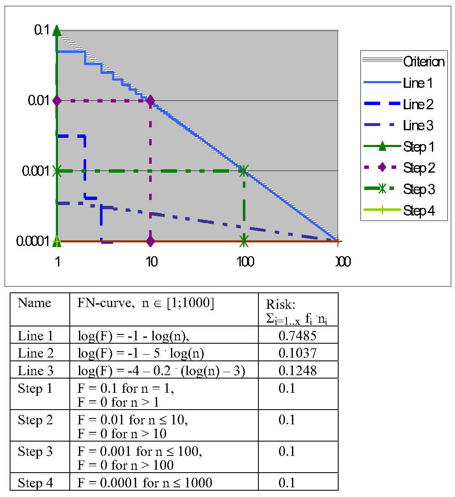
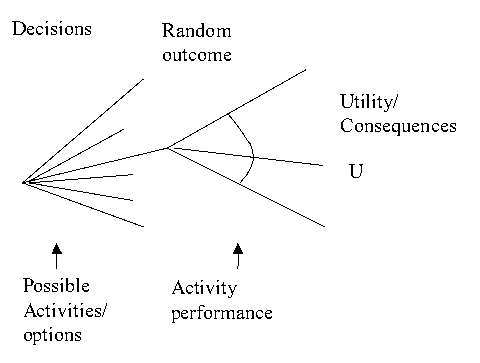
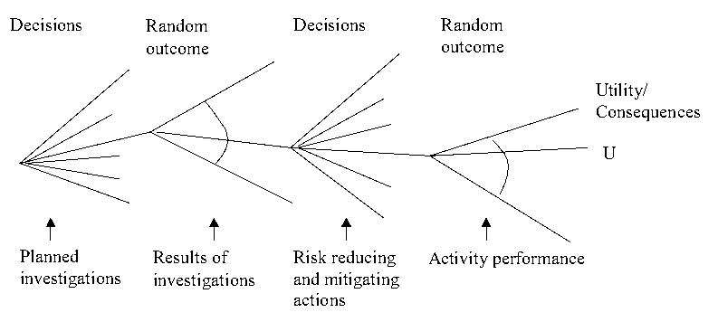
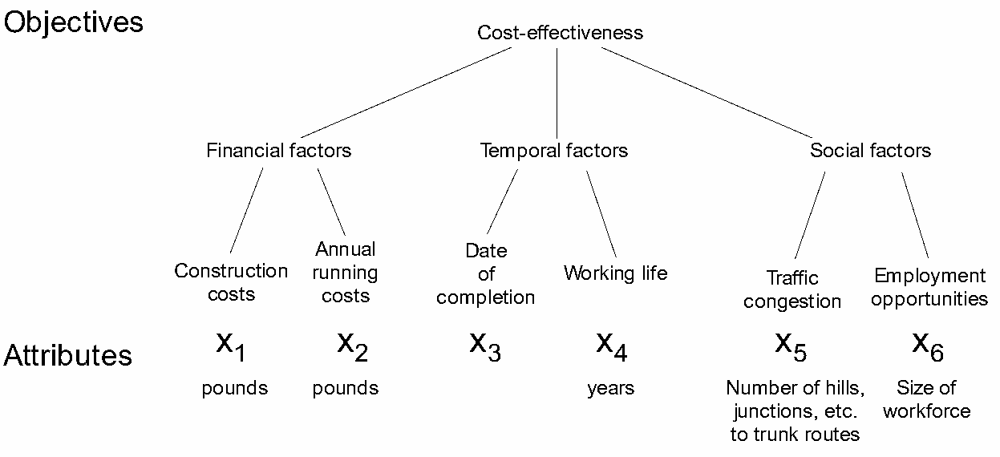
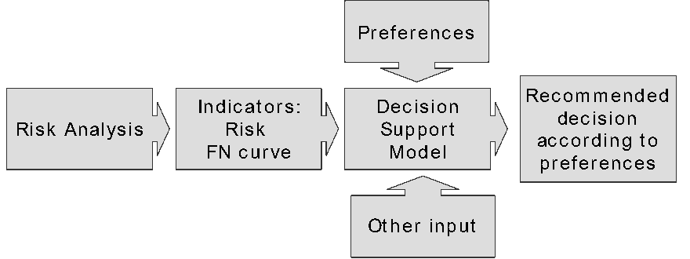

Theoretical Framework for Risk Assessment and Evaluation#
Background Documents on Risk Assessment in Engineering
Document #1
JCSS — Joint Committee of Structural Safety
Date: November 2008
JCSS authors: Inger B. Kroon, COWI and Marc A. Maes, University of Calgary
1 Introduction#
An activity/action/alternative may be associated with various types of risk, where risk is defined as the expected consequences (probability times consequence) of undesirable events. A risk assessment combines the determination of possible consequences and the assessment of the associated probability. That is, consequences for personnel, 3rd party persons, economy, environment etc.
After the risks have been assessed, judgements must be made by the decision maker on behalf of the society as to what further safety measures, if any, are desirable. This is the risk evaluation. A risk assessment in itself is useless unless the assessed risks are properly evaluated and measured using criteria for acceptability or tolerability. Normally, the assessment and in particular the process of making the risk assessment will lead to the identification of the main risk contributors allowing for the implementation of risk reduction measures. However, the assessments will not tell us what to do unless we have some type of acceptance criteria in order to compare alternative solutions on a rational basis and/or give the answer to whether it is necessary/worthwhile to reduce the risk. Thus, in other terms, risk analyses have limited value if they are not used to support decisions. By using a coherent decision support model, a rational “post-processing” of the results of the risk analysis can be carried out where the assessed risks are put into the right context. In this way, the basis and the reasoning behind a decision can be documented, (which is useful e.g. if the decision is questioned later). If no decision support model would be available the decision would have to be made based on vague or questionable assumptions and conscious or subconscious evaluations of decision factors.
When formulating decision support models/criteria for acceptability or tolerability various approached can be followed. Generally, distinction is made between descriptive and normative approaches. The descriptive approach take its starting point in what people do and how systems behave whereas the normative approach focus on what people should do and how systems should behave. The normative approach thus provides guidance in how to behave if the wish is to be consistent with certain axioms. Since the behaviour of people and systems do not necessarily describe how decisions ought to be made and since the role of decision analyses is to provide guidance and advice, the normative approach is taken as the basis for the risk assessment and evaluation.
Also, when doing risk analysis it is important to define what the criteria for acceptability are beforehand, so as to enable the risk analyst to make risk assessments that comply with the intent of the acceptance criteria.
2 Risk representation#
The output of a quantitative risk analysis is generally a quantitative measure of consequences and associated probabilities, e.g. the number of fatalities, n and the associated probability, p. In the case of systems or accidents with a range i=1..x of possible single scale consequences \(n_i\) and associated probabilities \(p_i\) the result of the risk analysis outcome will be
It is furthermore illustrative to draw the results up in a graph. Most commonly this is done in a double-logarithmic diagram, where the second axis indicates the cumulative frequency (for small frequencies this can be assumed equal to the probability, called the FN-curve
Using FN-curves the nature of the risk can be evaluated visually. Say, two systems have the same risk R (determined from eq. (1)), the system with the steepest curve should be preferred by the risk averse decision-maker, as this will imply relatively fewer accidents with large consequences.
3 Means of risk evaluation for QRA#
When it comes to evaluation of the results of risk analyses a number of methodologies have come into use. The evaluation of quantified risk analyses may for example be in terms of absolute criterions of various kinds, e.g. FN-criterion lines. Only recently, cost-benefit and maximum expected utility considerations have come into focus as a means for more comprehensive risk evaluation.
In the following regulatory criteria, FN-criterion lines and the decision theoretical approach are described and discussed.
3.1 Regulatory criteria#
Various regulatory, codified and standardised criteria are presented (and discussed) in JSCC background document 3. Therefore only reference to presentation and discussion of these criteria in absolute terms is included here.
3.2 FN-criterion lines#
Risk acceptance is often formulated in terms of a FN-criterion line. The criterion line can be described by its intersection with the secondary axis (for number of fatalities n=1), L and the slope of the line, \(\alpha_{FN}\) in the double logarithmic representation. The steeper the line, the more risk averse the attitude. The formula for the acceptance is
where F is the frequency, L is the intersection with the frequency axis for n=1 and \(\alpha_{FN}\) the slope.
The slope \(\alpha_{FN}\) is indicating the risk aversion of the decision-maker and is generally chosen in the range of 1 to 2. \(\alpha_{FN}\) =1 is regarded as a risk neutral choice and \(\alpha_{FN}\) =2 corresponds to strong risk aversion.
A FN-curve exceeding, i.e. being to the right of, the FN-criterion line at any point is considered to be unacceptable.
FN-criterion lines are generally considered a convenient way to evaluate societal risk, however, it can be shown that serious inconsistency in the way that risks are evaluated can arise, see e.g. Kroon and Høj (2001).
For illustration of the inconsistency of the method an example of a (risk neutral) FN-criterion line is defined with L=0.1 and \(\alpha_{FN}\) =1. The line is a quasi-line (step line) as only integer numbers are possible.

In order to discuss the functionality of the FN-criterion line, two extreme groups of FN-curves are discussed: single step functions and quasi-lines. It can be illustrated that any other FN-curve will be in between a single step function and a quasi-line. The single step function describes the risk of a system, where only one accident size is possible. The quasi-linear function describes a system where a range of accident sizes is possible and where a double-logarithmic linear relationship exists between F and n.
The functions defined in Figure 1 are all functions characterised as just barely acceptable when using the criterion line. The functions comprise four single step functions and three lines, i.e. the line just meeting the criterion in the beginning of the range, the line just meeting the criterion in the end of the range and the line meeting the criterion in the entire range.
The problem with the FN-criterion line is that the inherent risk of these unacceptable systems just acceptable may vary considerably. This is illustrated by calculating the risk inherent of the 7 FN-curves presented, see Figure 1. FN-curves represented by single step functions are truly risk neutral. However, the inherent risk is strongly dependent on the shape of the FN-curve. As soon as the curve deviates slightly from the single step function (as line 2 and 3) the inherent risk is higher. The maximum inherent risk (in this example) is 7.5 time higher than the risk in a single step function.
It follows that a certain FN-curve, which is not acceptable by application of the criterion line, may be much safer than a competing system, which is acceptable using the criterion line. This effect may result in unreasonable decisions, and it appears that the FN-criterion lines may be less suited for evaluating and comparing risk.
It is acknowledged that the criterion lines are uncomplicated to use, but the FN-criterion line seems to be much too rigorous and when compared to the effort of determining the risk figures far too much information is lost using this very simple criterion.
Thus, it must be concluded that FN-criterion lines do not support rational decisions and therefore cannot be recommended as a tool for risk evaluation.
3.3 Decision theoretical approach#
The most direct approach to deciding whether the engineering system is tolerable or not is to regard the problem as one of decision making under uncertainty. Decision theory provides a desirable framework for this problem.
Decision analysis is a tool or systematic procedure transforming an opaque (i.e. hard to understand) decision problem into a transparent (i.e. readily understood) decision problem by performing a sequence of transparent steps. It provides a mathematical model for making decisions in the face of uncertainty.
Determining on risk acceptability is a decision problem and can therefore benefit from the existing decision theoretic framework, which is shortly drawn up in the following. The expected utility approach (statistical decision theory) can be used both for problems having a single objective or for problems where the “larger” context is included in the analysis, i.e. having multiple objectives.
3.3.1 Terminology for decision making#
This chapter presents a definition of the words most commonly used in a decision making context. References for these definitions include Spradlin (1997), Keeney (1992), French (1988) and COWI (1998).
A decision is an allocation of resources. A decision is made by a decision maker. The decision maker is one who has authority over the resources being allocated. Presumably, this person makes the decision in order to meet some objective, which is what he hopes to achieve by allocating the resources. The decision might not succeed in meeting the objective. One might allocate resources and yet, for any number of reasons, not achieve the objectives. The decision maker might have several conflicting objectives.
The degree by which an objective is achieved is measured in terms of attributes (or criteria).
There are essentially three types of attribute - natural, constructed and proxy. Natural attributes are those having a common interpretation to everyone (cost in dollars, number of fatalities and other measurable quantities. For many important objectives, such as improving image and increasing international prestige, it is difficult or impossible to come up with natural attributes. The attributes to be used must essentially define what is meant by the objective. Constructed attributes may be used for this, these are made up of verbal descriptions of several distinct levels of impact that directly indicate the degree to which the associated objective is achieved and a numerical indicator is assigned to these levels. Examples of constructed attributes turning into natural attributes with time and use are gross national product GNP (aggregate of several factors to indicate economic activity of a country), Richter scale for earth quake magnitudes, Dow Jones industrial average etc. Finally, there are cases where it is difficult to identify either type of attribute for a given objective. In these cases indirect measurements may be used. The attributes used to indicate the degree to which the objective is achieved is called proxy attributes. When an attribute is used as proxy attributes for a fundamental objective, levels of that attribute are valued only for their perceived relationship to the achievement of that fundamental objective.
The decision maker will make decisions consistent with his values, which are those things that are important to him, especially those that are relevant to his decision. A common value is economic, according to which the decision maker will attempt to increase his wealth. Others might be personal, such as happiness or security, or social, such as fairness.
The decision maker might set a goal for his decision, which is a specific degree of satisfaction of a given objective. The goal differs from the objective in that it is either achieved or not.
A decision maker typically uses decision analysis, which is a structured way of thinking about how the action taken in the current decision would lead to a result. In doing this, one distinguishes three features of the situation: the decision to be made, the chance and the unknown events, which can affect the result, and the result itself. The decision analyst then constructs models, logical and perhaps even mathematical representations of the relationships within and between these three features of the decision situation. The models then allow the decision maker to estimate the possible implications of each course of action that he might take, so that he can better understand the relationship between his actions and his objectives.
In literature the terms of multi-attribute decision making, multi-criteria decision making and multi-objective decision making are used almost interchangeable.
Alternatives are the courses of action that the decision maker might take. When he chooses an alternative and commits to it, he has made the decision and then uncertainties might come into play. These are uncontrollable elements. Different alternatives that the decision maker might choose might subject him to different uncertainties, but in every case the alternatives combine with the uncertainties to produce the outcome. The outcome is the result of the decision situation and is measured on the scale of the decision maker’s values. The primary interest of the decision maker is not to make good decisions but to make decisions that have good outcomes. Since the outcome is the result not only of the chosen alternative but also of the uncertainties, it is itself uncertain. A bad decision may lead to a good outcome and conversely a good decision may lead to a bad outcome. The quality of a decision must be evaluated on the basis of the decision maker’s alternatives, information, values, and logic at the time the decision was made.
Also some decisions offer the opportunity to adopt a particular type of alternative called an option. An option is an alternative that permits a future decision following revelation of information. All options are alternatives, but not all alternatives are options. Options, as an important type of alternative, have the potential of adding value to a decision situation. A wise decision maker is alert to that possibility, and actively searches for valuable options.
Decision making would be much easier if reliable predictions of the outcome following from the selection of an alternative could be made. To this end decision makers use forecasts, or predictions of the future, to guide their choice of alternatives. They attempt to predict the outcome, on all values of interest to the decision maker, associated with each alternative that might be chosen. When the quantities forecasted are uncertain, forecasters can describe their uncertainty about these uncertainties using a probability distribution. A probability distribution is a mathematical form for capturing knowledge about uncertainties, and confidence in that knowledge.
Decisions are considered carefully, due to concern about the outcomes, whose desirability are measured by means of attribute values. Often the decision maker will have values other than economic, and in this case he will have to make trade-offs between values, which are judgements about how much he is willing to sacrifice on one value in order to receive more of another.
In order to account for the decision maker’s attitude towards risk, decisions can be analysed using a utility function. This encodes a decision maker’s attitude toward risk taking in mathematical form by relating the decision maker’s satisfaction with the outcome (or “utility” associated with the outcome) to the monetary value of the outcome itself.
3.3.2 Bayesian decision analysis - basic principles#
Von Neumann & Morgenstern (1943) have provided a theory of decision making according to the principle of maximising expected utility. They axiomatised expected utility theory by showing that, alternative actions can be ranked according to expected utilities. The expected utility of an alternative action is the weighted average of the utilities of the possible outcomes where the weights are the probabilities of each outcome. Thus, it follows from the definition of the utility function that the expected utility is a scalar indicator for the preference ordering.
Thus, according to the classical Bayesian decision analysis decisions are based on the expected utility of the considered alternatives. The alternative having the maximum expected utility, should be chosen from among the possible alternatives.
The utility function can often be represented as a single scale reflection of all attributes of importance for the decision and, thus, the Bayesian approach is essentially based on capitalization of all attributes, see section 3.3.5. Summing up the expected capitalization of all attributes results in a figure which measures the overall consequence of the alternative considered and in this way makes it possible to rank the alternatives according to expected utility.
The capitalization requires that prices are associated with the attributes. These prices or mutual weightings are denoted preferences and can, obviously, be delicate to decide, see section 3.3.6. However, the direct comparison provides transparency in the decision making.
In typical engineering applications the term utility may directly be translated into consequences in terms of costs, fatalities, environmental impact etc. In these cases the optimal decisions are those resulting in the lowest expected costs, the lowest expected number of fatalities and so on. Moreover, if costs and fatalities and/or other attributes are a part of the decision problem, full consistency may only be ensured if these attributes are expressed in terms of a common utility. This has for a long time been considered to represent a controversial problem, but recent work by Rackwitz [4] and Nathwani & Lind [5] emphasises the need to do so and also provides the required philosophical and theoretical framework. The weighting of the attributes has to be done somehow, directly or indirectly, in order to make a decision, thus, in order for the decision maker to be sure that the decision is made in accordance with his preferences, the weighting should be made in a transparent way.
As the immediate consequence of the fact that any activity planned or performed in order to reduce and/or control the risk is only directly quantifiable in terms of costs, the most straightforward approach is to associate utility in terms of cost consequences. However, in some cases the requirements given by legislation are formulated in terms of fatalities and in such cases it is necessary to assess the risk both in terms of expected costs and in terms of the expected number of fatalities. However, it can be shown, see Evans and Verlander [12], that the rational way to formulate acceptance criteria for risk analysis is by use of decision theory.
The Bayesian decision analysis generally makes use of decision trees. However, also the more general influence diagrams can be used for decision analysis. Decision trees and influence diagrams for decision analysis are briefly described in the following sections.
3.3.3 Decision trees#
The Bayesian decision analysis generally makes use of decision trees. When problems are well defined and their dependencies are reasonably known, then they can be put into a hierarchical structure known as a decision tree. A decision tree has three basic nodes, a decision node presenting alternative actions or options A , a chance node representing the random outcome of action or option called the state of nature θ , and a terminal node where the final outcomes are given with respect to the decision \(u(A,\theta)\) . For the chance node the probability of each branch θ is described by the probability measure \(p(\theta)\). Generally, decision trees provide a good way of assessing risk and uncertainty in a decision, if accurate numbers can prescribed to them.
The simplest form of the decision analysis is the so-called prior-analysis. In the prior-analysis the risk (expected utility) is evaluated on the basis of statistical information and probabilistic modelling available prior to any decision and/or activity. This prior decision analysis is illustrated by a simple decision tree in Figure 2. In prior and posterior decision analysis the risk (expected utility) for each possible activity/option is evaluated in the principal form as
where R is the risk, U the utility, \(P_i\) is the i’th branching probability and \(C_i\) the consequence of the event of branch i.

Prior decision analysis in fact corresponds closely to the assessment of the risk associated with an activity. Prior decision analysis thus forms the basis for the comparison of risks between different activities.
Posterior decision analysis is in principle of the same form as the prior decision analysis, however, changes in the branching probabilities and/or the consequences in the decision tree reflect that the considered problem has been changed as an effect of risk reducing measures, risk mitigating measures and/or collection of additional information. Posterior decision analysis may thus be used to evaluate the effect activities, which factually have been performed.
Pre-posterior decision analysis may be illustrated by the decision tree shown in Figure 3. Using pre-posterior decision analysis optimal decisions in regard to activities, which may be performed in the future, e.g. the planning of risk reducing activities and/or collection of information may be identified. An important pre-requisite for pre-posterior decision analysis is that decision rules need to be formulated specifying the future actions, which will be taken on the basis of the results of the planned activities.

In pre-posterior decision analysis the risk (expected utility) for each of the possible investigations is evaluated as
where \(a(z)\) are the different possible actions that can be taken on the basis of the result of the considered investigation z , \(E[\ ]\) is the expected value operator. ´ and ´´ refer to the probabilistic description of the events of interest based on prior and posterior information respectively see e.g. Lindley [6].
Pre-posterior decision analysis forms a strong decision support tool and has been intensively used for the purpose of risk based inspection planning see e.g. Faber et al. [7]. However, so far pre-posterior decision analysis has been grossly overlooked in risk analysis.
3.3.4 Bayesian Probabilistic Networks/influence diagrams for risk assessment/evaluation#
Several decision support tools and techniques have been developed over the years, facilitating the analysis of various aspects of risks. One of the more promising developments in this regard is the Bayesian Probabilistic Networks (BPNs) see e.g. Jensen [8]. The probabilistic nets are very useful for risk assessment and the nets can directly be extended to influence diagrams (decision graphs) for decision analysis. Thus, the risk assessment and the evaluation can be completely integrated. The theoretical basis for the nets is identical to that of the decision trees, but the format is much freer and can quite easily handle long sequences of decisions.
3.3.5 Objectives and Attributes#
Objectives relate to the decision to be made, but typical objectives are to minimise the number of fatalities, the cost and the environmental impact associated with the considered activity. The objectives of the decision maker have to be reflected in the formulated utility function.
The degree to which an objective is achieved is measured in terms of attributes.
An example of an objective hierarchy and the corresponding attributes is given in Figure 4.

The attributes describing an objective can be either natural, constructed or proxy, see Chapter 3.3.1. Since it is the choice of attributes that defines the actual settings of the decision problem, the attributes should be chosen with great care. If, e.g., the objective is to minimise the loss of life an obvious attribute is annual number of fatalities due to the cause of concern. This implies that all lives have equal value - young or old. Another way of formulation the attribute is by the expected years of life lost (compared to some life expectancy e.g. 76 years). But it is not possible to avoid placing value judgement on the relative importance of death to different individuals. The important point is that assignments of attributes to measure objectives always require value judgements and the choice of attribute might affect the final decision.
Generally attributes ought to be
measurable
operational
comprehensible.
It should be noted that also probability can be used as an attribute.
3.3.6 Preferences (Attribute weighting)#
Having determined the set of attributes, the objectives must be quantified with a value/utility model. This is done by means of converting the attribute values to a value scale by means of judgement of relative value or preference strength. The multi-attribute value problem is then the problem of value trade-offs. These trade-offs can be systematically structured in utility functions. These are scalar-valued functions defined on the consequence space, which serve to compare various levels of the different attributes indirectly. Given the utility function the decision maker’s problem is to choose that alternative from the space of feasible alternatives, which maximises the expected utility. This is called Multi-Attribute Utility Theory and is often referred to as MAUT. The classical reference on MAUT is Keeney & Raiffa (1993).
In some simple cases formalised preference structures are not required. This is the case if one alternative is dominating the others, that is, for all attributes one alternative is having the best scores. In these cases it is obvious which alternative to choose. However, most problems will require structuring of preferences in order to achieve rational decisions.
A desirable utility function could be on the form
where \(u_i\) is the utility function over the single attribute \(x_i\) . Here the utility function is broken down into component parts. Achievement of simple aggregation rules for single-attribute utility functions requires some independence conditions to be fulfilled. The four main independence conditions relevant to issues of multiple objectives are preferential independence, weak-difference independence, utility independence and additive independence, see e.g. Keeney (1992) for a closer description.
Additive utility functions, which are most commonly used, are of the form
where \(u_i\) are consistently scaled single-attribute utility functions and \(\lambda_i\) the weighting factor for the n considered attributes.
According to Keeney & Raiffa (1993) the willingness to pay method is the most commonly used technique for aggregation. It can be used when considering an attribute structure that has a monetary attribute and some other x attributes. The aggregation is the made by pricing out the x components. In many contexts, but probably not all, this would be a natural way of aggregating. It is important to keep in mind that the attribute weightings will have to be supplied by the decision maker irrespective of the choice of decision support model - by using the utility approach the is done in a direct and transparent way forming a rational decision basis.
An example of a simple utility function reflecting the same issues as the FN-criterion line in section 3.2, i.e. only safety to personnel measured in fatalities and risk aversion is presented here. Note that risk aversion may not seem rational, but therefore it may very well be included in the evaluation in a rational way.
The utility function associates a weight to the consequence in terms of a preference P of each type of consequences, e.g. fatalities. Risk aversion can be introduced using a non-linear relationship between number of fatalities and the utility. This can be done for example with a function, u(n) indicating here the disutility of an accident with n fatalities
α is normally in the range between 1 and 2, where 1 indicates a risk neutral attitude and 2 indicates a strongly risk averse attitude.
The expected disutility of a system \(U_{sys}\) is determined as the weighted sum of disutilities for each accident size having probability \(p_i\)
The expected utility is used as a relative measure making it possible to choose between various actions. The action with the largest expected utility will be chosen from among the possible actions. Thus, no absolute criterion for the acceptability of the considered action is given from decision theory.
3.3.7 Decision support model constraints#
A decision analysis as such is a relative comparison of the defined alternatives from which the best alternative will be recommended. However, this does not ensure that the risk of the best alternative is acceptable with respect to e.g. the safety of the individual. In order to secure that e.g. the level of risk acceptable for the individual is not violated, the individual risk can be calculated and checked against specified maximum levels. These levels should be regarded as basic constraints on the decision-making process.
4 Decision maker#
The formulation of the decision problem will depend very much on the decision maker. Who are the stakeholder, the beneficiaries and the responsible parties? Each possible decision maker will have different viewpoints and objectives. It is important to identify the decision maker since the selection and weighting of attributes must be made on behalf of the decision maker.
The following are six general decision making levels. However, a further specification of the possible decision makers may depend on the political structure of the considered country.
Supranational authority
National authority and/or regulatory agencies
Local authority
Private owner
Private operator
Specific stakeholders
5 Practical risk acceptance criteria#
For the more practical definition of the acceptance criteria reference is made to the JCSS background document “Acceptance criteria in risk assessment”. This document covers the important aspects of:
Which objectives are to be included in the utility function for comparison/decision regarding risk acceptability and how?
Which constraints secure that the risk of the best alternative with the maximum expected utility is acceptable with respect to the safety of the individual, legislative rules of different kinds etc?
How are the objectives measured?
How is the mutual weighing of objectives? Are all objectives transferred to a common scale?
6 Summary and conclusions#
It is desirable to set up a framework making it possible to evaluate risks and suggest optimal decisions.
Decisions are often based directly on risk analyses and ridgid criteria for acceptability. However, it is recommended to perform a decision analysis under uncertainty, taking into account all avaliable information and weighing pros and cons in order to achieve the best decision from an overall societal point of view. In this way a ranking of the considered alternatives can be obtained and the overall most optimal alternative can be chosen.
The mechanics of the suggested framework is thus to determine the risks and the direct implications related to the considered alternatives and combine these with the preferences of the decision maker (and society as such) in order to achieve a rational basis for deciding on the most optimal alternative.
Figure 5 shows the overall framework, where risk analyses (could be a large/considerable number of analyses) are made for all considered alternatives. These analyses result in risk indicators e.g. in terms of FN curves and the related expected consequences. These indicators, together with other input, are logically combined by means of decision maker preferences to reflect the expected consequences of the proposed alternatives. Thus, the decision support model (DSM) uses the output from the risk analyses and results in a ranking of the considered alternatives.

7 References#
Benjamin, J.R. & Cornell, C.A. (1970). “Probability, Statistics and Decision for Civil Engineers.” McGraw-Hill, 1970.
French, S. (1988). “Decision Theory: An introduction to the Mathematics of Rationality.” Ellis Harwood, Ltd. Chichester, West Sussez, England, 1988.
Jensen, F.V. (1996). “An Introduction to Bayesian Networks.” UCL Press, London, 1996.
Keeney, R. L. (1992). “Value-Focused Thinking: A Path to Creative Decisionmaking.” Harvard University Press: Cambridge, Massachusetts, 1992.
Keeney, R. L. & Raiffa, H. (1993). “Decisions with Multiple Objectives: Preferences and Value Tradeoffs.” Cambridge University Press, 1993. First published in 1976.
Kroon. I. B. (1994). “Decision Theory Applied to Structural Engineering Problems.” Ph.D. Thesis, Structural Reliability Theory, paper no. 132, Aalborg University, Denmark, 1994.
Lindley, D. V. (1965). “Introduction to Probability and Statistics from a Bayesian Viewpoint. Vol. 1: Probability. Vol. 2: Statistics.” Cambridge University Press, 1965.
Raiffa, H. & Schlaifer, R. (1961). “Applied Statistical Decision Theory.” Harvard University Press, Cambridge, Massachusetts, 1961.
Spradlin (1997). “A Lexicon of Decision Making.” 1997.
von Neumann, J. & Morgenstern, O. (1943). “Theory of Games and Economical Behaviour.” Princeton University Press, 1943.
von Winterfeldt, D. & Edwards, W. (1986). “Decision Analysis and Behavioral Research.” Cambridge University Press, 1986.
Watson, S. R. & Buede, D. M. (1987). “Decision Synthesis: The Principles and Practice of Decision Analysis.” Cambridge University Press, Cambridge, 1987.
Ditlevsen, O. and Madsen, H.O.(1996), “Structural Reliability Methods”, Wiley, Chichester.
Rackwitz, R. (2000), “Optimization – the basis for code-making and reliability verification”, Journal of Structural Safety, Elsevier Science, Vol. 22, pp 27-60.
Nathwani, J.S., Lind, N.C., Pandey, M.D.(1997), “Affordable Safety by Choice: the Life Quality Method”, Institute for Risk Research, University of Waterloo, Waterloo, Canada.
Evans, A.W. and Verlander, N.Q. (1997). “What is wrong with Criterion FN-Lines for Judging the Tolerability of Risk”, Risk Analysis, Vol. 17, No. 2.
COWI (1998). “Decision Support Models. A Survey.” Phase 1 report in the DSM study being part of the OECD/PIARC Joint ERS2 Project on Transport of Dangerous Goods through Road Tunnels, 1998.
Faber, M.H., Kroon, I.B., Kragh. E., Bayly, D. and Decosemaeker, P. (2002). “Risk Assessment of Decommissioning Options using Bayesian Networks”. Journal of Offshore Mechanics and Arctic Engineering, Vol. 124, November 2002, pp. 231-238.
Kroon, I.B. and Høj, N.P. (2001). “Application of Risk Aversion for Engineering Decision Making”. IABSE 2001 conference report on Safety, Risk and Reliability - Trends in Engineering.
Source and citation#
Suggested citation: Kroon, I. B., and Maes, M. A. (2008). Theoretical Framework for Risk Assessment and Evaluation. Background Documents on Risk Assessment in Engineering, document #1. Joint Committee on Structural Safety, November 2008.